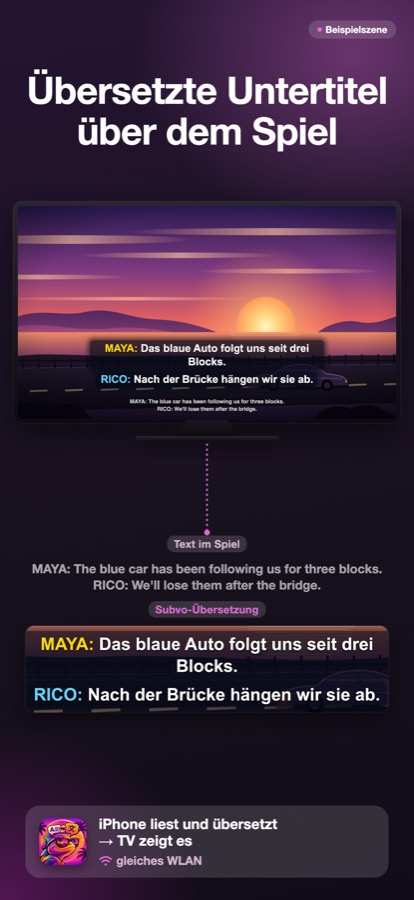
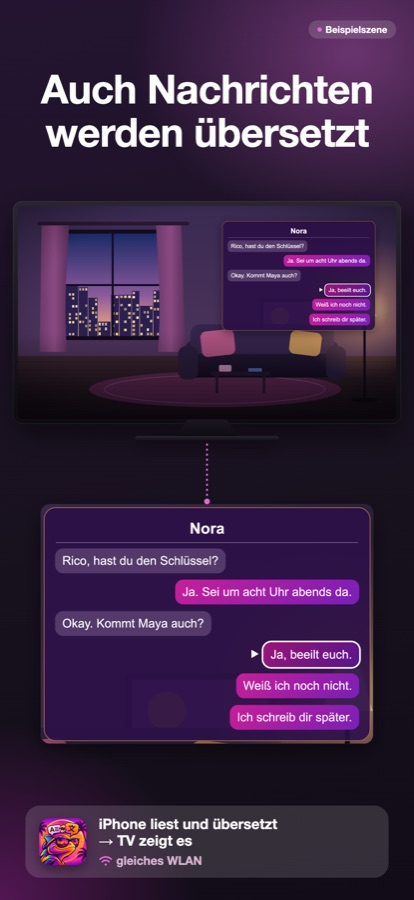
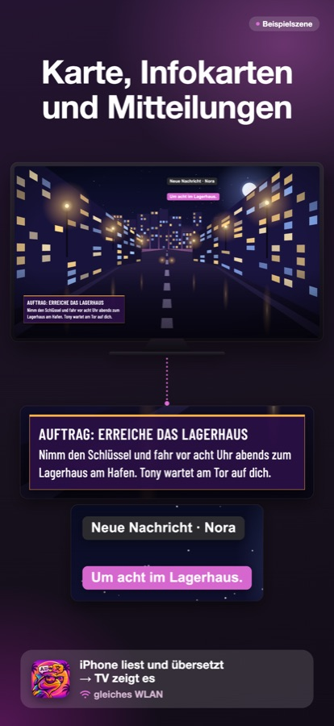
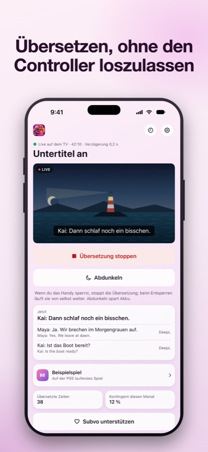
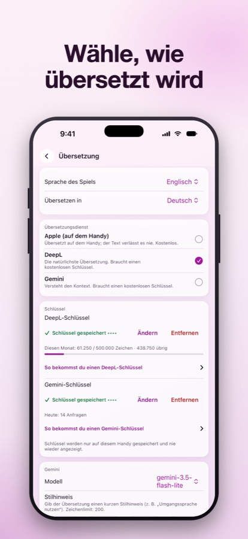
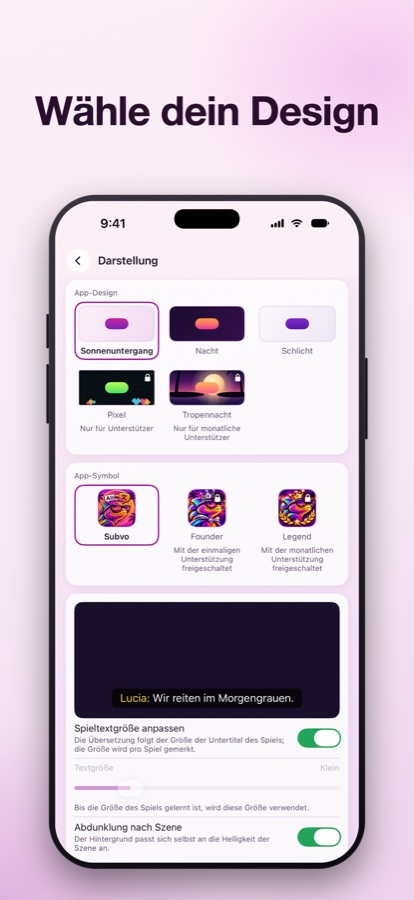

Subvo
SubvoDer Text im Spiel, auf dem TV in deiner Sprache.
Subvo liest den Text in deinem PS5-Spiel auf dem iPhone, übersetzt ihn und zeigt die Übersetzung auf dem TV direkt über dem Spiel. Den Controller musst du dafür nicht weglegen.
Kostenlos und werbefrei. iPhone, PlayStation 5 und ein Samsung- oder LG-TV.

Nicht nur Untertitel
Neben Dialogen übersetzt Subvo in unterstützten Spielen auch Handy-Nachrichten im Spiel, News, Questkarten und Benachrichtigungen, die in der Ecke auftauchen.
Dialoge
Der Name des Sprechers behält seine Farbe aus dem Spiel, die Übersetzung verdeckt den Untertitel des Spiels.

Handy-Nachrichten
Chats auf dem Handy im Spiel werden direkt an der Stelle der Nachrichtenblasen übersetzt.

Karten und Benachrichtigungen
Quest- und Kartenhinweise, seitlich eingeblendete Nachrichten und Tipps in der Ecke werden ebenfalls übersetzt.
Von der Konsole zum TV in drei Schritten
Das iPhone verbindet sich mit der Konsole
Per Remote Play mit deiner eigenen PS5. Du meldest dich auf Sonys eigener Seite bei deinem Sony-Konto an; Subvo sieht dein Passwort nie.
Es liest den Text und übersetzt ihn
Gelesen wird auf dem iPhone selbst. Übersetzt wird mit Apples Übersetzung auf dem Gerät oder, wenn du willst, mit deinem eigenen DeepL- oder Gemini-Schlüssel.
Es zeigt sie auf dem TV
Die Übersetzung erscheint in der Subvo-TV-App im selben WLAN über dem Spiel. Beim Installieren der TV-App hilft dir das iPhone.
MAYA: The blue car has been following us for three blocks.
RICO: We'll lose them after the bridge.
MAYA: Das blaue Auto folgt uns seit drei Blocks.
RICO: Nach der Brücke hängen wir sie ab.
Übersetzung ohne Warten
Für einige Spiele lädt sich ein fertiges Übersetzungspaket (ins Türkische) automatisch herunter. Zeilen aus dem Paket erscheinen sofort und ohne Internet. Das Paket für Grand Theft Auto VI umfasst mehr als 738.000 Zeilen und gibt es auch auf Arabisch.
In anderen Spielen und Sprachen übersetzt die Engine deiner Wahl. Es gibt 12 Zielsprachen.
Bevor du loslegst
- Deine eigene PlayStation 5 und dein PlayStation-Konto.
- Ein Smart-TV von Samsung (Tizen) oder LG (webOS).
- iPhone, Konsole und TV im selben WLAN.
- iOS 26 für die Übersetzung auf dem Gerät. Unter älteren iOS-Versionen brauchst du einen eigenen DeepL- oder Gemini-Schlüssel.
Keine PS5? Probier mit „So funktioniert’s“ in der App eine Beispielszene aus.
Deine Daten bleiben bei dir
- Subvo hat keine Server; es gehen keine Daten an den Entwickler.
- Keine Werbung, keine Analyse, kein Tracking.
- PlayStation-Anmeldung und Kopplungsschlüssel liegen nur im Schlüsselbund des iPhone.
- Die Übersetzung ist kostenlos und komplett offen. Wenn du Subvo unterstützen willst, schaltest du dafür nur Abzeichen, Designs und Symbole frei.
Du bestimmst das Aussehen
Schriftgröße, Farbe, Hintergrund und Anordnung änderst du in den Einstellungen. Die App gibt es in sieben Sprachen.



Den Code kann jeder einsehen
Subvo ist eine Open-Source-App unter der AGPL-3.0. Quellcode und Lizenzangaben findest du auf GitHub.
Fragen oder Probleme?
Für Fragen, Probleme oder Vorschläge: subvo2026@gmail.com
Wenn du eine Aufzeichnung aus Einstellungen › Erweitert › „Problem melden“ anhängst, lässt sich der Fehler leichter beheben. Nenne bitte auch dein iPhone-Modell, die iOS-Version und die Marke deines TV.
- Was brauche ich? Ein iPhone (iOS 16 oder neuer), eine PS5 und einen Smart-TV im selben WLAN.
- Wie wird übersetzt? Für einige Spiele gibt es ein fertiges Übersetzungspaket. Sonst übersetzt Apples Übersetzung auf dem Gerät (ab iOS 26) oder dein eigener DeepL- oder Gemini-Schlüssel.
- Wohin gehen meine Daten? An den Entwickler werden keine Daten gesendet. Details in der Datenschutzerklärung (auf Englisch).
- Wie verwalte ich ein Abo? Auf dem iPhone unter Einstellungen › Apple-Account › Abonnements. Unterstützungskäufe sind freiwillig; alle Funktionen der App sind kostenlos.